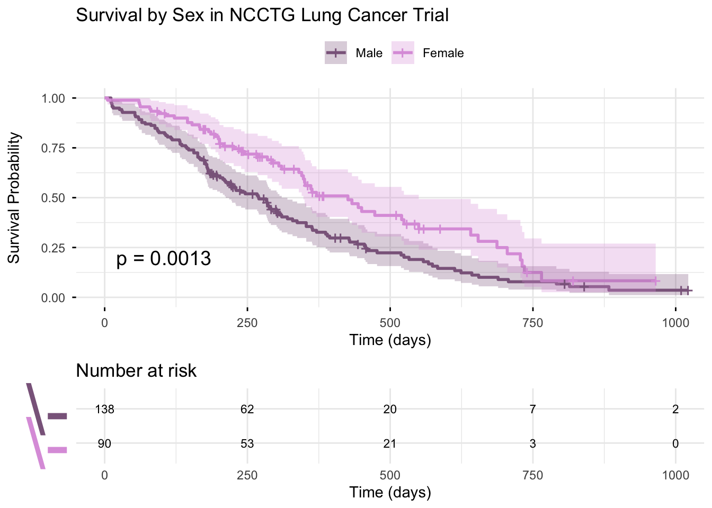
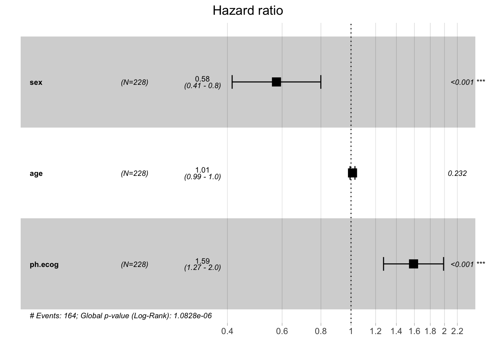
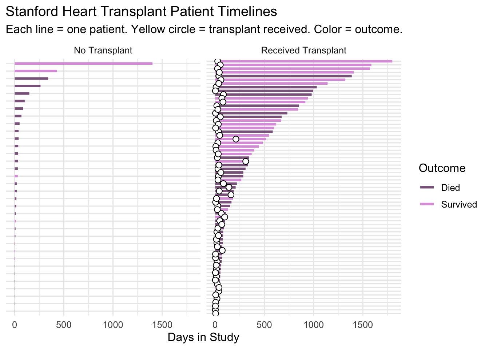
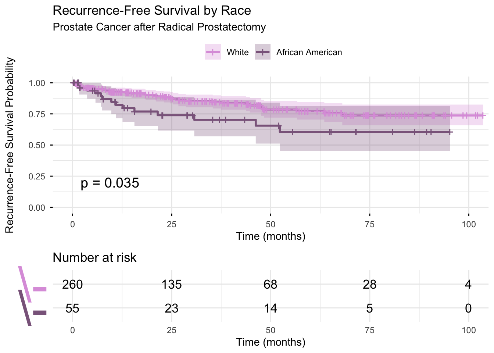
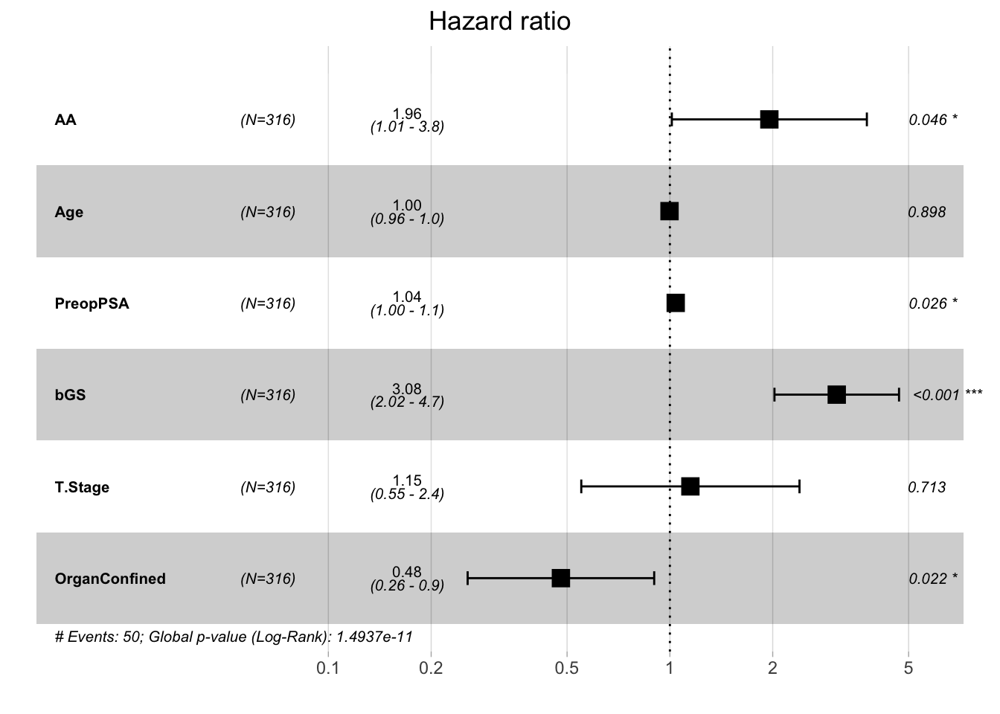
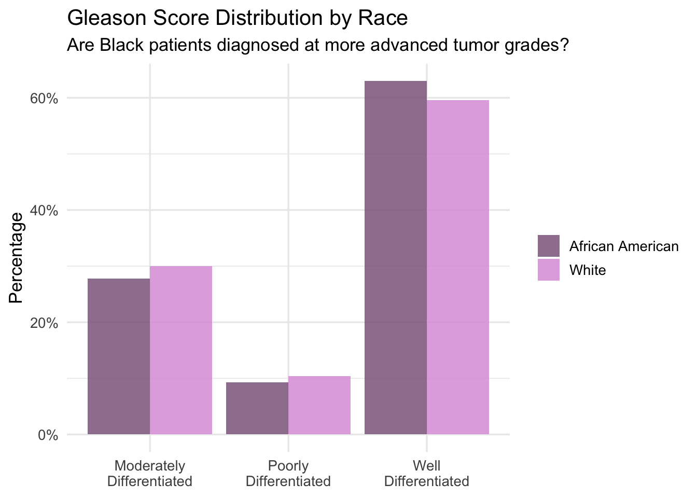

In this portfolio piece, I’ll be experimenting with doing survival analyses using datasets in the survival and medical data packages.
## Loading required package: ggplot2## Loading required package: ggpubr##
## Attaching package: 'survminer'## The following object is masked from 'package:survival':
##
## myeloma##
## Attaching package: 'dplyr'## The following objects are masked from 'package:stats':
##
## filter, lag## The following objects are masked from 'package:base':
##
## intersect, setdiff, setequal, unionTo start, I’ll be using the lung dataset
Reference: Loprinzi CL. Laurie JA. Wieand HS. Krook JE. Novotny PJ. Kugler JW. Bartel J. Law M. Bateman M. Klatt NE. et al. Prospective evaluation of prognostic variables from patient-completed questionnaires. North Central Cancer Treatment Group. Journal of Clinical Oncology. 12(3):601-7, 1994.
## Warning in data(lung): data set 'lung' not found## Rows: 228
## Columns: 10
## $ inst <dbl> 3, 3, 3, 5, 1, 12, 7, 11, 1, 7, 6, 16, 11, 21, 12, 1, 22, 16…
## $ time <dbl> 306, 455, 1010, 210, 883, 1022, 310, 361, 218, 166, 170, 654…
## $ status <dbl> 2, 2, 1, 2, 2, 1, 2, 2, 2, 2, 2, 2, 2, 2, 2, 2, 2, 2, 2, 2, …
## $ age <dbl> 74, 68, 56, 57, 60, 74, 68, 71, 53, 61, 57, 68, 68, 60, 57, …
## $ sex <dbl> 1, 1, 1, 1, 1, 1, 2, 2, 1, 1, 1, 2, 2, 1, 1, 1, 1, 1, 2, 1, …
## $ ph.ecog <dbl> 1, 0, 0, 1, 0, 1, 2, 2, 1, 2, 1, 2, 1, NA, 1, 1, 1, 2, 2, 1,…
## $ ph.karno <dbl> 90, 90, 90, 90, 100, 50, 70, 60, 70, 70, 80, 70, 90, 60, 80,…
## $ pat.karno <dbl> 100, 90, 90, 60, 90, 80, 60, 80, 80, 70, 80, 70, 90, 70, 70,…
## $ meal.cal <dbl> 1175, 1225, NA, 1150, NA, 513, 384, 538, 825, 271, 1025, NA,…
## $ wt.loss <dbl> NA, 15, 15, 11, 0, 0, 10, 1, 16, 34, 27, 23, 5, 32, 60, 15, …Females survive significantly longer than males (p = 0.0013). The curves diverge early and stay separated throughout, and by day 500 there’s a meaningful gap in survival probability.
fit <- survfit(Surv(time, status) ~ sex, data = lung)
ggsurvplot(
fit,
data = lung,
pval = TRUE,
conf.int = TRUE,
risk.table = TRUE,
risk.table.height = 0.3,
risk.table.y.text = FALSE,
fontsize = 3,
legend.labs = c("Male", "Female"),
legend.title = "",
palette = c("plum4", "plum"),
title = "Survival by Sex in NCCTG Lung Cancer Trial",
xlab = "Time (days)",
ylab = "Survival Probability",
ggtheme = theme_minimal()
)## Ignoring unknown labels:
## • colour : ""
After controlling for age and performance status, is sex still a significant predictor of survival?
## Call:
## coxph(formula = Surv(time, status) ~ sex + age + ph.ecog, data = lung)
##
## n= 227, number of events= 164
## (1 observation deleted due to missingness)
##
## coef exp(coef) se(coef) z Pr(>|z|)
## sex -0.552612 0.575445 0.167739 -3.294 0.000986 ***
## age 0.011067 1.011128 0.009267 1.194 0.232416
## ph.ecog 0.463728 1.589991 0.113577 4.083 4.45e-05 ***
## ---
## Signif. codes: 0 '***' 0.001 '**' 0.01 '*' 0.05 '.' 0.1 ' ' 1
##
## exp(coef) exp(-coef) lower .95 upper .95
## sex 0.5754 1.7378 0.4142 0.7994
## age 1.0111 0.9890 0.9929 1.0297
## ph.ecog 1.5900 0.6289 1.2727 1.9864
##
## Concordance= 0.637 (se = 0.025 )
## Likelihood ratio test= 30.5 on 3 df, p=1e-06
## Wald test = 29.93 on 3 df, p=1e-06
## Score (logrank) test = 30.5 on 3 df, p=1e-06The Kaplan-Meier analysis reveals significantly better survival among female lung cancer patients compared to males (log-rank p = .001). This sex difference persists after controlling for age and performance status in the Cox proportional hazards model, with females showing approximately 42% lower risk of death at any given time point (HR = 0.575, 95% CI [0.414, 0.799]). Performance status is the strongest predictor of survival. Each one unit increase in ECOG score increases the hazard of death by approximately 59% (HR = 1.590, 95% CI [1.273, 1.986]). Age is not a significant predictor in the sample after accounting for sex and performance status (p = .23).
These findings are consistent with documented sex differences in lung cancer outcomes, where females tend to have better prognosis even after adjusting for clinical factors. However, the mechanisms behind this disparity are not completely understood, and may relate to hormonal differences, smoking patterns, and differential tumor biology.
Note: ECOG performance status (ph.ecog) is a standardized measure of functional impairment ranging from 0 (fully active) to 4 (completely disabled).

Now, I want to look at the Stanford Heart Transplant data that contains information on the survival of patients on the waiting list for the Stanford heart transplant program.
Source: J Crowley and M Hu (1977), Covariance analysis of heart transplant survival data. Journal of the American Statistical Association, 72, 27–36.
## Rows: 172
## Columns: 8
## $ start <dbl> 0, 0, 0, 1, 0, 36, 0, 0, 0, 51, 0, 0, 0, 12, 0, 26, 0, 0, 1…
## $ stop <dbl> 50, 6, 1, 16, 36, 39, 18, 3, 51, 675, 40, 85, 12, 58, 26, 1…
## $ event <dbl> 1, 1, 0, 1, 0, 1, 1, 1, 0, 1, 1, 1, 0, 1, 0, 1, 1, 0, 1, 0,…
## $ age <dbl> -17.15537303, 3.83572895, 6.29705681, 6.29705681, -7.737166…
## $ year <dbl> 0.1232033, 0.2546201, 0.2655715, 0.2655715, 0.4900753, 0.49…
## $ surgery <dbl> 0, 0, 0, 0, 0, 0, 0, 0, 0, 0, 0, 0, 0, 0, 0, 0, 0, 0, 0, 0,…
## $ transplant <fct> 0, 0, 0, 1, 0, 1, 0, 0, 0, 1, 0, 0, 0, 1, 0, 1, 0, 0, 1, 0,…
## $ id <dbl> 1, 2, 3, 3, 4, 4, 5, 6, 7, 7, 8, 9, 10, 10, 11, 11, 12, 13,…# now i'll fit a time-varying Cox model
cox_heart <- coxph(Surv(start, stop, event) ~ transplant + age + surgery,
data = heart)
summary(cox_heart)## Call:
## coxph(formula = Surv(start, stop, event) ~ transplant + age +
## surgery, data = heart)
##
## n= 172, number of events= 75
##
## coef exp(coef) se(coef) z Pr(>|z|)
## transplant1 0.01610 1.01623 0.30859 0.052 0.9584
## age 0.03054 1.03101 0.01389 2.198 0.0279 *
## surgery -0.77333 0.46147 0.35967 -2.150 0.0315 *
## ---
## Signif. codes: 0 '***' 0.001 '**' 0.01 '*' 0.05 '.' 0.1 ' ' 1
##
## exp(coef) exp(-coef) lower .95 upper .95
## transplant1 1.0162 0.9840 0.555 1.8606
## age 1.0310 0.9699 1.003 1.0595
## surgery 0.4615 2.1670 0.228 0.9339
##
## Concordance= 0.6 (se = 0.036 )
## Likelihood ratio test= 10.72 on 3 df, p=0.01
## Wald test = 9.68 on 3 df, p=0.02
## Score (logrank) test = 10 on 3 df, p=0.02Using the time-varying Cox proportional hazards model, receiving a heart transplant was not associated with improved survival after controlling for age and prior surgery (HR = 1.016, p = .958). Older age was associated with worse survival (HR = 1.031, p = .028), while prior bypass surgery was protective (HR = 0.461, p = .032). I was suprised by the null transplant finding. After reviewing the literature, this reflects a transplant paradox where patients who survived long enough to receive a heart were already a selected, healthier group, making it difficult to detect a true treatment effect.
I did want to know that race and minority status is absent from this dataset entirely. This is a significant omission given what is known about racial disparities in organ transplantation. Black and Hispanic patients are less likely to be referred for transplant evaluation, less likely to be placed on waiting lists, and wait longer for organs when they are listed. A dataset that ignores race cannot speak to whether the transplant program served all patients equitably.
# get transplant times separately
transplant_times <- heart %>%
mutate(transplant = as.numeric(as.character(transplant))) %>%
filter(transplant == 1) %>%
group_by(id) %>%
summarise(transplant_time = min(start))
# built timeline
heart_timeline <- heart %>%
mutate(transplant = as.numeric(as.character(transplant))) %>%
group_by(id) %>%
summarise(
start = min(start),
end = max(stop),
died = max(event),
age = mean(age)
) %>%
left_join(transplant_times, by = "id") %>%
mutate(
outcome = ifelse(died == 1, "Died", "Survived"),
transplant_group = ifelse(is.na(transplant_time),
"No Transplant",
"Received Transplant")
)
table(is.na(heart_timeline$transplant_time))##
## FALSE TRUE
## 69 34# plotting
ggplot(heart_timeline, aes(y = reorder(id, end))) +
geom_segment(aes(x = start, xend = end, yend = reorder(id, end),
color = outcome), linewidth = 1.2) +
geom_point(data = filter(heart_timeline, !is.na(transplant_time)),
aes(x = transplant_time, y = reorder(id, end)),
shape = 21, fill = "white", color = "black", size = 2.5) +
scale_color_manual(values = c("Died" = "plum4", "Survived" = "plum")) +
facet_wrap(~transplant_group, scales = "free_y") +
labs(
title = "Stanford Heart Transplant Patient Timelines",
subtitle = "Each line = one patient. Yellow circle = transplant received. Color = outcome.",
x = "Days in Study",
y = NULL,
color = "Outcome"
) +
theme_minimal(base_size = 12) +
theme(axis.text.y = element_blank(),
axis.ticks.y = element_blank())
The timeline plot shows each patient’s follow-up period, colored by outcome. In the transplant group, white circles mark when the transplant was received (most occurred within the first 100 days). Despite receiving a transplant, many patients still died shortly after, which supports the Cox model’s null finding. The no-transplant group shows a similar pattern of mostly short survival times, with a handful of long-term survivors in both groups.
Source: Cata et al. ‘Blood Storage Duration and Biochemical Recurrence of Cancer after Radical Prostatectomy’. Mayo Clin Proc 2011; 86(2): 120-127.
## Rows: 316
## Columns: 20
## $ RBC.Age.Group <dbl> 3, 3, 3, 2, 2, 3, 3, 1, 1, 2, 2, 1, 1, 1, 3, 1, 1, 1,…
## $ Median.RBC.Age <dbl> 25, 25, 25, 15, 15, 25, 25, 10, 10, 15, 15, 10, 10, 1…
## $ Age <dbl> 72.1, 73.6, 67.5, 65.8, 63.2, 65.4, 65.5, 67.1, 63.9,…
## $ AA <dbl> 0, 0, 0, 0, 0, 0, 1, 0, 0, 1, 0, 0, 0, 0, 1, 0, 0, 1,…
## $ FamHx <dbl> 0, 0, 0, 0, 0, 0, 0, 0, 0, 0, 0, 0, 0, 0, 0, 0, 0, 0,…
## $ PVol <dbl> 54.0, 43.2, 102.7, 46.0, 60.0, 45.9, 42.6, 40.7, 45.0…
## $ TVol <dbl> 3, 3, 1, 1, 2, 2, 2, 3, 2, 2, 1, 3, 2, 2, 2, 2, 1, 2,…
## $ T.Stage <dbl> 1, 2, 1, 1, 1, 1, 1, 1, 1, 1, 1, 1, 1, 2, 1, 1, NA, 1…
## $ bGS <dbl> 3, 2, 3, 1, 2, 1, 1, 1, 1, 2, 2, 1, 1, 2, 2, 2, 1, 1,…
## $ `BN+` <dbl> 0, 0, 0, 0, 0, 0, 0, 0, 0, 0, 0, 0, 0, 0, 0, 0, 0, 0,…
## $ OrganConfined <dbl> 0, 1, 1, 1, 1, 0, 1, 0, 1, 1, 1, 1, 1, 0, 1, 1, 1, 1,…
## $ PreopPSA <dbl> 14.08, 10.50, 6.98, 4.40, 21.40, 5.10, 6.03, 8.70, 3.…
## $ PreopTherapy <dbl> 1, 0, 1, 0, 0, 0, 0, 0, 0, 0, 0, 0, 0, 1, 0, 1, 0, 0,…
## $ Units <dbl> 6, 2, 1, 2, 3, 1, 2, 4, 1, 2, 2, 2, 2, 4, 2, 4, 5, 4,…
## $ sGS <dbl> 1, 3, 1, 3, 3, 3, 3, 3, 3, 3, 3, 3, 2, 1, 3, 1, 2, 2,…
## $ AnyAdjTherapy <dbl> 0, 0, 0, 0, 0, 0, 0, 0, 0, 0, 0, 0, 0, 0, 0, 0, 0, 0,…
## $ AdjRadTherapy <dbl> 0, 0, 0, 0, 0, 0, 0, 0, 0, 0, 0, 0, 0, 0, 0, 0, 0, 0,…
## $ Recurrence <dbl> 1, 1, 0, 0, 0, 0, 0, 1, 0, 0, 0, 0, 0, 0, 0, 0, 0, 0,…
## $ Censor <dbl> 0, 0, 1, 1, 1, 1, 1, 0, 1, 1, 1, 1, 1, 1, 1, 1, 1, 1,…
## $ TimeToRecurrence <dbl> 2.67, 47.63, 14.10, 59.47, 1.23, 74.70, 13.87, 8.37, …fit_aa <- survfit(Surv(TimeToRecurrence, Recurrence) ~ AA,
data = blood_storage)
ggsurvplot(
fit_aa,
data = blood_storage,
pval = TRUE,
conf.int = TRUE,
risk.table = TRUE,
risk.table.height = 0.3,
risk.table.y.text = FALSE,
legend.labs = c("White", "African American"),
legend.title = "",
palette = c("plum", "plum4"),
title = "Recurrence-Free Survival by Race",
subtitle = "Prostate Cancer after Radical Prostatectomy",
xlab = "Time (months)",
ylab = "Recurrence-Free Survival Probability",
ggtheme = theme_minimal()
)## Ignoring unknown labels:
## • colour : ""
cox_aa <- coxph(Surv(TimeToRecurrence, Recurrence) ~ AA + Age + PreopPSA +
bGS + T.Stage + OrganConfined,
data = blood_storage)
summary(cox_aa)## Call:
## coxph(formula = Surv(TimeToRecurrence, Recurrence) ~ AA + Age +
## PreopPSA + bGS + T.Stage + OrganConfined, data = blood_storage)
##
## n= 300, number of events= 50
## (16 observations deleted due to missingness)
##
## coef exp(coef) se(coef) z Pr(>|z|)
## AA 0.670518 1.955250 0.335434 1.999 0.0456 *
## Age -0.002546 0.997457 0.019828 -0.128 0.8978
## PreopPSA 0.039248 1.040029 0.017665 2.222 0.0263 *
## bGS 1.124901 3.079913 0.214245 5.251 1.52e-07 ***
## T.Stage 0.138131 1.148126 0.375294 0.368 0.7128
## OrganConfined -0.734728 0.479636 0.320837 -2.290 0.0220 *
## ---
## Signif. codes: 0 '***' 0.001 '**' 0.01 '*' 0.05 '.' 0.1 ' ' 1
##
## exp(coef) exp(-coef) lower .95 upper .95
## AA 1.9553 0.5114 1.0132 3.7733
## Age 0.9975 1.0025 0.9594 1.0370
## PreopPSA 1.0400 0.9615 1.0046 1.0767
## bGS 3.0799 0.3247 2.0238 4.6871
## T.Stage 1.1481 0.8710 0.5502 2.3957
## OrganConfined 0.4796 2.0849 0.2557 0.8995
##
## Concordance= 0.806 (se = 0.031 )
## Likelihood ratio test= 62.36 on 6 df, p=1e-11
## Wald test = 62.76 on 6 df, p=1e-11
## Score (logrank) test = 79.49 on 6 df, p=5e-15
The Kaplan-Meier analysis reveals significantly lower recurrence-free survival among African American patients compared to white patients (log-rank p = .035); the curves diverge early and the gap widens throughout follow-up. By month 50, the disparity in recurrence-free survival is visually substantial.
To determine whether this disparity was explained by differences in tumor characteristics at diagnosis, I fit a Cox proportional hazards model controlling for age, preoperative PSA, Gleason score, tumor stage, and organ confinement. African American status remained a significant independent predictor of earlier recurrence (HR = 1.96, 95% CI [1.01, 3.77], p = .046), meaning Black patients had nearly twice the hazard of recurrence even after accounting for all available clinical factors. The gleason score was the strongest overall predictor (HR = 3.08, p < .001), while organ-confined tumors were protective (HR = 0.48, p = .022).
The persistence of the racial disparity after clinical adjustment is the most important finding here. It suggests that factors beyond tumor biology (potentially including differences in treatment quality, follow-up care, and the cumulative effects of structural racism on health) are driving worse outcomes for Black patients.
The issue here is that this dataset cannot tell us why the disparity exists, only that it does, and that it survives statistical adjustment for every measured clinical variable. In many of the health datasets I have analyzed, I recurrently find health disparities, but no data that can help us address it. Ultimately, it is unlikely that biomedical treatment will help bridge that gap, and as researchers we must conduct research that pushes more system-level, institutional change.
Note that a higher Gleason score = more poorly differentiated = worse prognosis. It’s a measure of how aggressive the cancer is at the cellular level. Based on the plot, both groups are dominated by poorly differentiated tumors. The racial disparity in recurrence isn’t explained by tumor aggressiveness at diagnosis because both groups present with similar Gleason score distributions, so the disparity must lie elsewhere.
blood_storage %>%
filter(!is.na(bGS)) %>%
mutate(
race = ifelse(AA == 1, "African American", "White"),
bGS_label = recode(bGS,
`1` = "Well\nDifferentiated",
`2` = "Moderately\nDifferentiated",
`3` = "Poorly\nDifferentiated"
)
) %>%
count(race, bGS_label) %>%
group_by(race) %>%
mutate(pct = n / sum(n)) %>%
ggplot(aes(x = bGS_label, y = pct, fill = race)) +
geom_col(position = "dodge", alpha = 0.85) +
scale_fill_manual(values = c("African American" = "plum4", "White" = "plum")) +
scale_y_continuous(labels = scales::percent) +
labs(
title = "Gleason Score Distribution by Race",
subtitle = "Are Black patients diagnosed at more advanced tumor grades?",
x = NULL,
y = "Percentage",
fill = NULL
) +
theme_minimal(base_size = 13)
What does being Black predict in terms of clinical presentation and treatment received?
disparity_model <- glm(AA ~ PreopPSA + bGS + T.Stage + OrganConfined +
FamHx + PreopTherapy + Units + RBC.Age.Group + Age,
data = blood_storage,
family = binomial)
summary(disparity_model)##
## Call:
## glm(formula = AA ~ PreopPSA + bGS + T.Stage + OrganConfined +
## FamHx + PreopTherapy + Units + RBC.Age.Group + Age, family = binomial,
## data = blood_storage)
##
## Coefficients:
## Estimate Std. Error z value Pr(>|z|)
## (Intercept) 0.232336 1.716358 0.135 0.8923
## PreopPSA 0.064117 0.025776 2.488 0.0129 *
## bGS -0.129499 0.278795 -0.464 0.6423
## T.Stage -1.223562 0.752858 -1.625 0.1041
## OrganConfined -0.001237 0.366711 -0.003 0.9973
## FamHx -0.649005 0.443667 -1.463 0.1435
## PreopTherapy -0.092582 0.539986 -0.171 0.8639
## Units -0.020071 0.090669 -0.221 0.8248
## RBC.Age.Group 0.001568 0.194723 0.008 0.9936
## Age -0.011321 0.022083 -0.513 0.6082
## ---
## Signif. codes: 0 '***' 0.001 '**' 0.01 '*' 0.05 '.' 0.1 ' ' 1
##
## (Dispersion parameter for binomial family taken to be 1)
##
## Null deviance: 273.90 on 300 degrees of freedom
## Residual deviance: 262.72 on 291 degrees of freedom
## (15 observations deleted due to missingness)
## AIC: 282.72
##
## Number of Fisher Scoring iterations: 5The logistic regression predicting race from available clinical and treatment variables found that only preoperative PSA differed significantly between African American and white patients (p = .013), with Black patients presenting with higher PSA levels at diagnosis. Tumor grade, stage, organ confinement, treatment received, and blood storage age were all distributed similarly between groups. The fact that a single clinical variable distinguishes the two groups, yet Black patients face nearly double the recurrence hazard, highlights that the drivers of this disparity lie largely outside what biomedical data can capture. They are likely found in the social, structural, and systemic conditions that shape health long before a patient enters a clinic.
These results are exactly why I am passionate about health psychology and medical anthropology. The data can show us that a disparity exists, and even rule out certain biological explanations, but it cannot tell us why Black men face worse outcomes after the same surgery at the same institution. That question requires a different kind of inquiry, one that goes beyond social determinants of health to structural determinants. Social determinants ask what conditions people live in. Structural determinants ask why those conditions are distributed unequally in the first place and the answer is always historical, political, and institutional. No biomedical intervention will close this gap: research that centers structural change will.